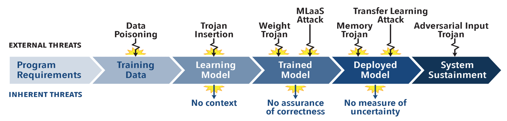
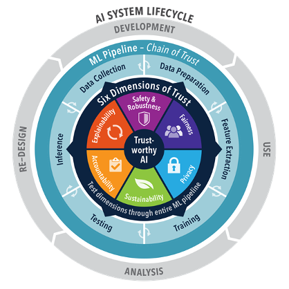

Trusted AI
The Challenge

In today’s rapidly evolving technological landscape, AI systems face numerous threats throughout their lifecycle. These threats range from data poisoning and Trojan insertion during the training phase to adversarial attacks and memory trojans during deployment. Such vulnerabilities can compromise the integrity, reliability, and trustworthiness of AI models. Moreover, inherent threats like lack of context, absence of correctness assurance, and unmeasured uncertainty further exacerbate the challenge. Addressing these issues is critical to developing AI systems that are secure, reliable, and trustworthy.
The Objective
To overcome these challenges, our objective is to develop a comprehensive test and evaluation framework for AI that encompasses the following key areas:
- Human Trust of AI/ML: Establishing and maintaining trust in AI systems by ensuring transparency, reliability, and ethical considerations.
- Measures, Metrics, and Testing: Developing robust metrics and testing methodologies to evaluate AI performance, fairness, and safety.
- Data Source Bias and Modularity: Identifying and mitigating biases in data sources and promoting modularity to enhance flexibility and robustness.
- Cybersecurity + Risk Modeling: Integrating cybersecurity measures and risk modeling to protect AI systems from malicious attacks and vulnerabilities.
- Developing AI Workforce and Talent: Building a skilled workforce proficient in AI technologies and best practices to drive innovation and maintain high standards.
Technical Approach:

Our technical approach involves applying trusted AI principles throughout the AI system lifecycle, from development and use to analysis and re-design. This holistic approach ensures that trust is embedded in every phase of AI development and deployment.
Circle of Trust For Trusted AI
For AI to succeed with trust as a core attribute, we need to develop a “circle of trust” where all AI activities follow best practices based on our 6 dimensions of trustworthiness:
- Safety and Robustness: Ensuring that AI systems operate safely and are resilient to attacks and failures. This involves rigorous testing and validation to detect and mitigate vulnerabilities.
- Fairness: Eliminating biases and ensuring equitable outcomes for all users. Fairness requires continuous monitoring and adjustments to avoid discrimination and ensure inclusivity.
- Privacy: Protecting user data and maintaining confidentiality throughout the AI lifecycle. Privacy measures include data anonymization, secure data storage, and compliance with data protection regulations.
- Sustainability: Maintaining AI operations over time without degradation in performance. Sustainability encompasses efficient resource utilization, long-term maintenance, and adaptability to evolving requirements.
- Accountability: Clearly defining responsibility and control over AI actions. Accountability involves transparent decision-making processes, audit trails, and mechanisms for addressing failures or unintended consequences.
- Explainability: Providing clarity on how decisions are made by the AI. Explainability helps users understand AI behavior, builds trust, and facilitates debugging and improvement of AI models.
By integrating these dimensions into the AI system lifecycle—spanning development, use, analysis, and re-design—we ensure that AI systems are trustworthy, reliable, and aligned with ethical standards.
Trusted AI Projects
The nd-crane GitHub Organization hosts repositories for the following TAI projects.
Human-machine Pairing for Trustworthy AI: (Adam Czajka)
Develop a framework for human-machine supervision cycle, with its validation in the realm of computer vision and security areas, which will allow both sides – humans and AI systems –to interact, learn from each other and, as an overarching goal, increase the trustworthiness in AI systems.
Trust and Verifiability in AI: (Adam Czajka)
Develop an approach for testing the verifiability of AI, which is designed to primarily work with black-box models, but will support white-box testing also. To support today’s warfighter, where solutions are based on AI models in embedded systems, effective black box tools are needed to help establish the verifiability of the AI, even when solutions are proprietary, and neither the training data or the algorithms are available.
Statistical Analysis and Measurement of Neural Networks: (Chris Sweet)
Investigate and develop a statistical and computational framework to test, analyze, and enhance Neural Network models to help identify and alleviate potential failures and weaknesses, including those that occur naturally and those deliberately created by adversaries.
Knowledge Representation and Engineering: (Paul Brenner)
Identifying the complex causes of potential mission or weapon system failure (or success) and determining effective responses to preventing (or ensuring) such requires leveraging best in class data analytics techniques on rapidly growing, but often poorly structured, data. To facilitate this approach, natural language processing (NLP) and related machine learning tools such as knowledge graphs can be harnessed to gain insight and answer these critical questions. Further information can be found at https://nd-crane.github.io.
Framework Infrastructure Development: (Charles Vardeman II)
The T&E Web UI and Framework provides a graphical user interface and backend framework for connecting the various components and toolboxes together into a single coherent system. This component essentially provides a sandbox for Crane T&E to interact with, to define information surrounding an AI instance, to document and define the T&E activities undertaken, and to help automate testing. Further information can be found at https://nd-crane.github.io and https://la3d.github.io/nuggets/posts/frameworks-reflection/.